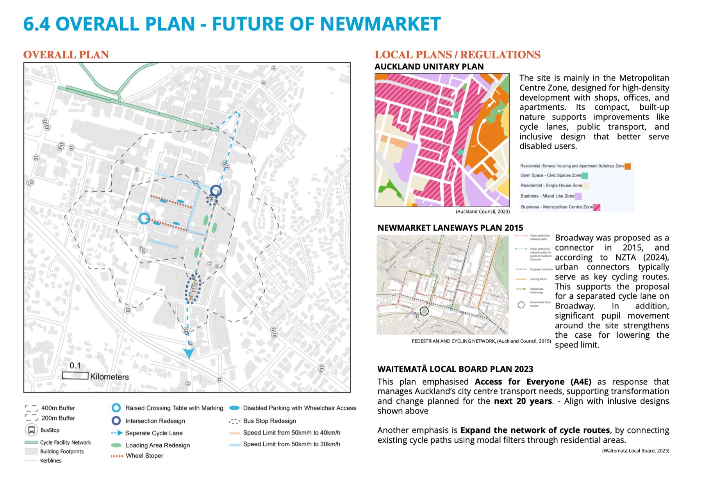
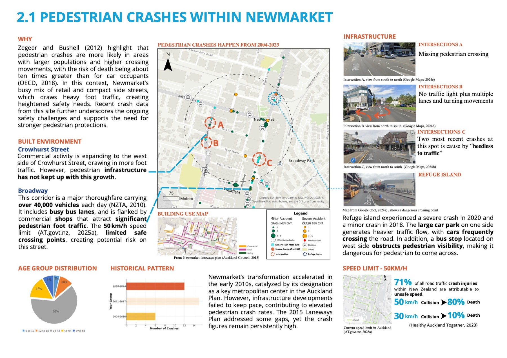
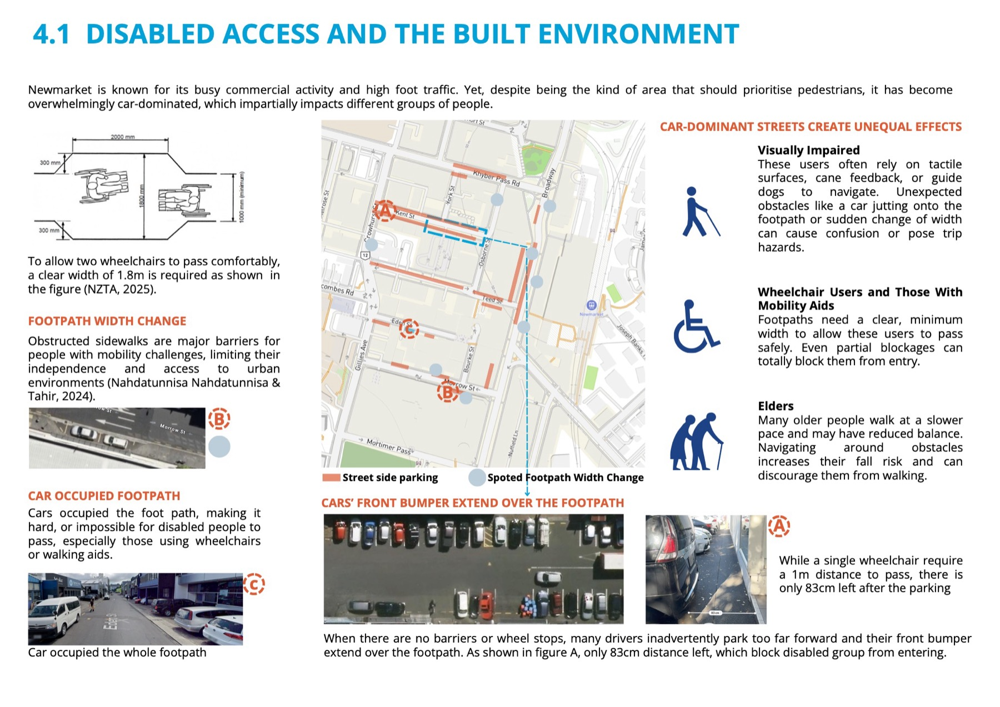
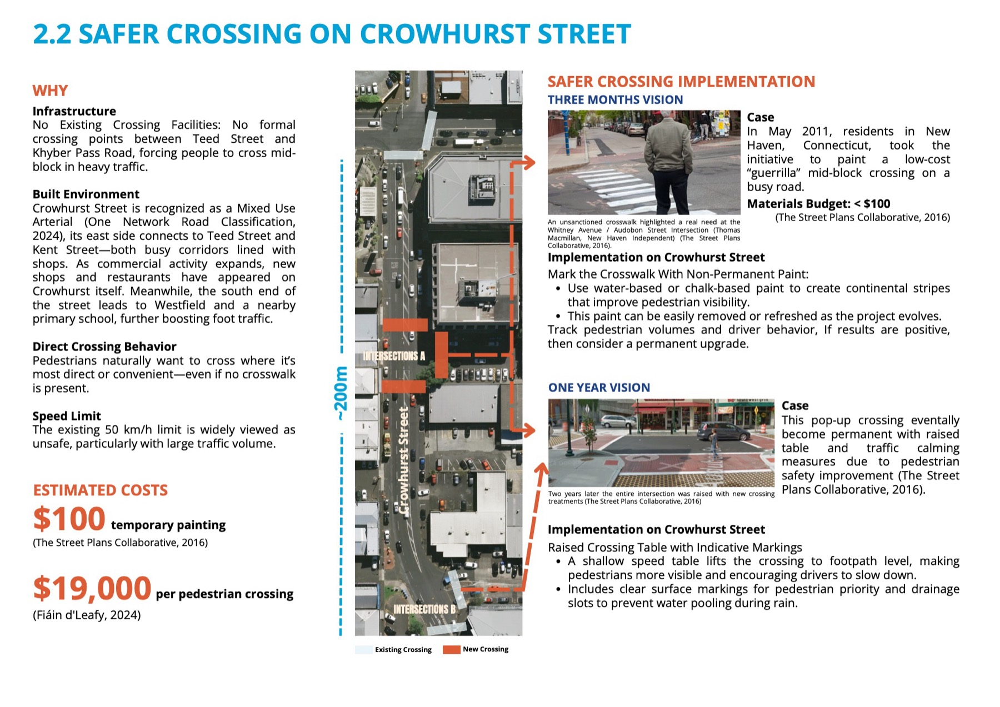
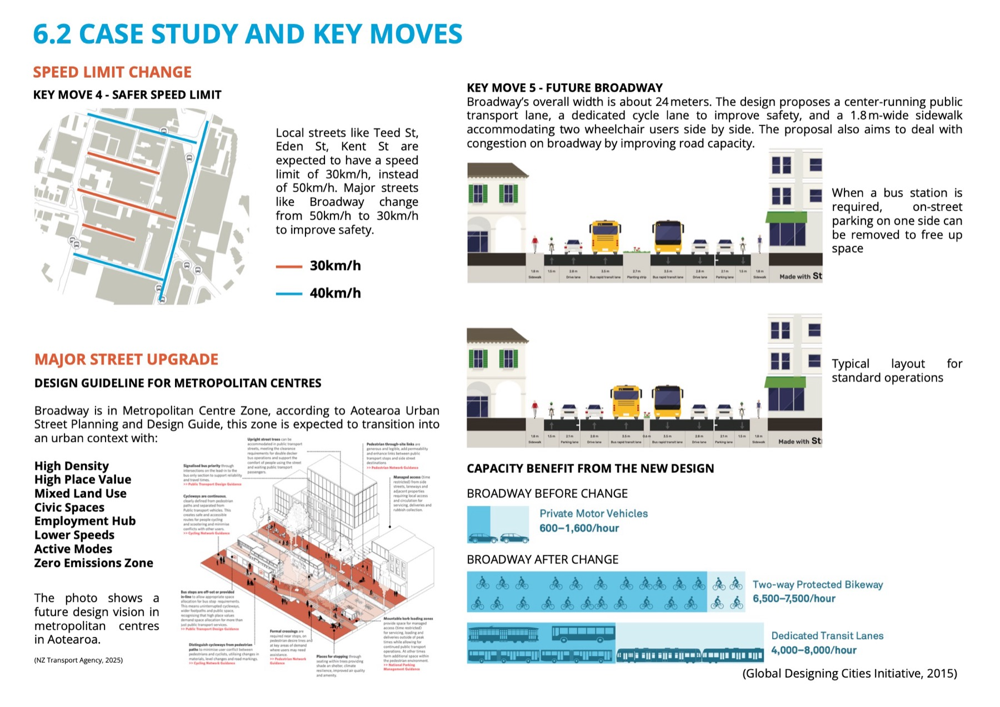
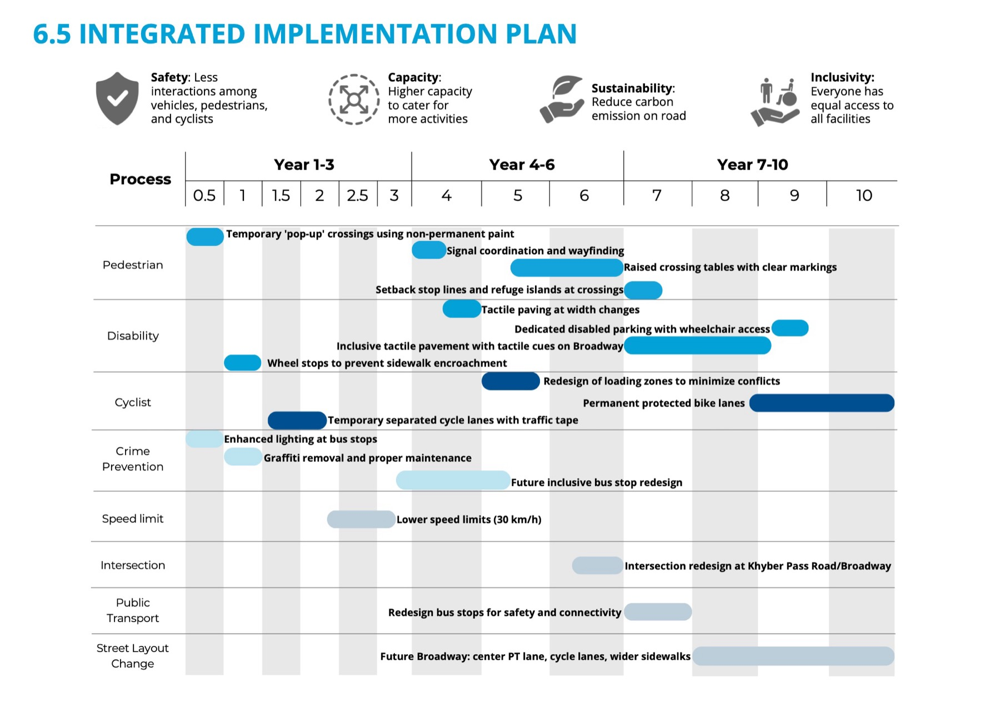

Sheet 01 · Urban design
Safer streets for Newmarket
An individual street-design proposal to turn Newmarket — one of Auckland’s busiest metropolitan centres — from a car-dominated place into streets that are safe, inclusive and sustainable for everyone who uses them.
- Year
- 2025 — confirm
- Context
- University of Auckland, research project
- Role
- Individual project
- Methods
- Crash mapping, CPTED and accessibility audits, street design
- Tools
- ArcGIS, Streetmix
- Location
- Newmarket, Auckland

01The problem
Newmarket sits in the Metropolitan Centre Zone of the Auckland Unitary Plan: a dense mix of shops, offices, schools and homes. Yet its streets are built around the car. Broadway carries more than 40,000 vehicles a day, with few safe places to cross and no separated cycle lanes.
I started from the evidence — twenty years of crash records, audits on foot, and a comparison of Auckland’s transport emissions plan with alternative scenarios — before proposing any change.
02Analysis
Crash mapping in ArcGIS located the junctions where people walking and cycling are most at risk; 87% of cycling crashes involved people aged 18 to 45. A CPTED audit examined sight lines, lighting and maintenance around bus stops and car parks, and an accessibility audit measured how parked cars squeeze the footway below the width a wheelchair user needs.


03Five key moves
- Tactile paving and wheel stops to keep footways clear and legible.
- A protected junction at Khyber Pass Road and Broadway.
- Centre-running public transport on Broadway.
- Lower speed limits of 30–40 km/h across the centre.
- Reallocating Broadway’s 24 m corridor to give space to buses, cycle lanes and 1.8 m footways.
Each move draws on international precedent, from New Haven and Delft to Tokyo and Seoul.


04Delivery
The proposal is phased over ten years — starting with quick, low-cost pilots that build public support and ending with the full redesign of Broadway — and is tested against the Auckland Unitary Plan, the Newmarket Laneways Plan 2015 and the Waitematā Local Board Plan 2023.

Boards include Esri basemaps, Google Street View imagery, precedent photographs and street sections made with Streetmix, credited on the boards.